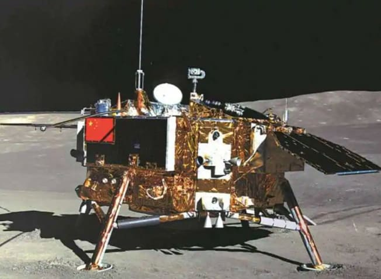
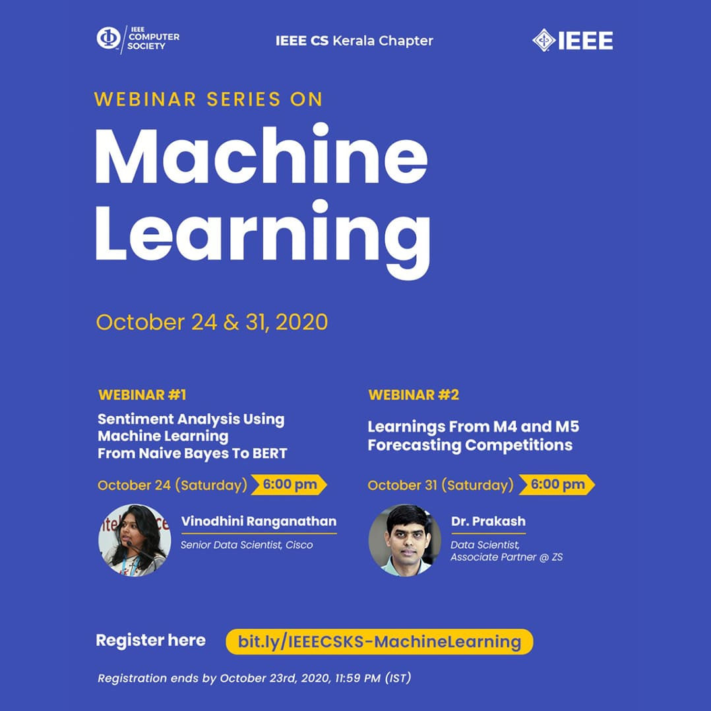
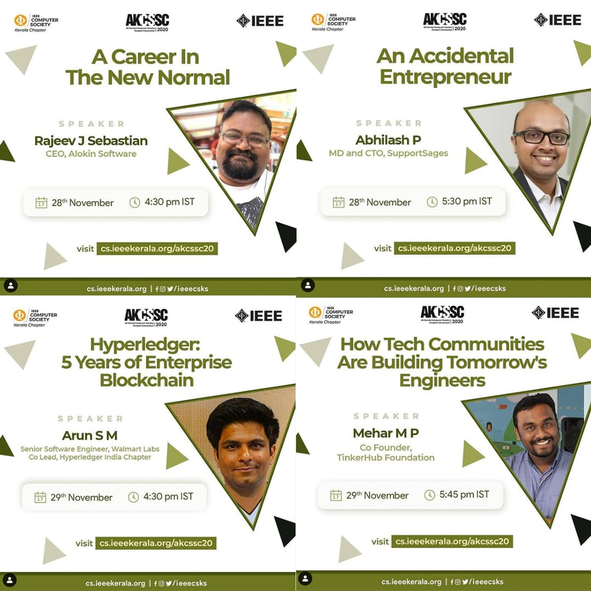

AKCSSC Edition , QUARTER IV : 2020 |
TECHNICAL ARTICLEChina’s Record Moon Mission

On the 1st December 2020, China’s Chang’e 5 lunar exploration satellite landed successfully on the moon.
This has made China, the only country to perform soft landing on moon after the USA and the USSR.
It also raised China’s flag on the lunar surface. Unlike the other ordinary Moon Missions,
the main feature here is to bring back samples back to the Earth for research. It will be for
the first time China is trying for the same after 1976 when the USSR’s Luna Mission had succeeded in the same.After failure of both Israel and India on making a soft-landing on the far side of the moon, China had succeeded it 2019, when Chang’e 4 has landed on the far side of the moon. This time, the aim of Chang’e 5 was to bring soil samples upto 2 kg onto an ascent vehicle. The ascent vehicle was fired along with the orbiter and has reached back to Earth in Inner Mongolia, which is a Northern Chinese Autonomous Province. China also plans Chang’e 6 which will also help in collecting Lunar Soil sample and return them to Earth. Ever since the end of Cold war and the beginning of the twenty first century, China has made tremendous progress in Lunar Exploration and research. In two decades, it has already sent five satellites, and is planning for three more in the next decade. This will include more equipment and instruments possibly for the establishment of a base on the moon. India’s Chandrayaan Mission and Israel’s Beresheet are the two competing Space Programme’s as far as China is concerned. NASA is also a close rival, but it has shifted it’s focus on Mars now. Unlike others, NASA has multiple restrictions on working closely with CNSA with growing geopolitical tensions between both nations. Hopefully all countries will work together as Space is not owned by anyone and humanity as a whole is yet to explore it fully. |
Updates From IEEE Computer Society Kerala ChapterWebinar Series – October

A 2-days webinar series on Machine Learning was organised by IEEE Computer Society Kerala Chapter on October 24, 2020,
& October 31 2020.
This series was conducted with the aim of introducing students into different fields and enhancing their knowledge in various tracks
of Machine Learning.
All the sessions were extremely remarkable and highly appreciated by the students. They found it immensely knowledgeable and beneficial. |
|||||||||
AKCSSC 2020

The All Kerala Computer Society Student Convention (AKCSSC) is the annual student convention conducted by IEEE Computer Society Kerala Section. This year, the event was held virtually for the first time ever to give students the exposure to the trending technology. A whole package filled with fun and technical events with the best opportunity to network among the IEEEians. Various competitions and contests were conducted for the students to hone and improve their technical skills. All the student branches come together and organise several tech-based pre-events and competitions to select their finalist for the event. |
|||||||||
TechThreads Top Picks
| |||||||||
|
TechThreads with the tagline A Tech Blog to Capture stories from the Tech World was a blogging initiative taken by IEEE Computer Society Kerala Chapter to encourage IEEE student members to express their thoughts and illustrate their ideas in words. It is a platform to showcase their technical writing skills and abilities in this massive tech-world. With Three cycles completed the above students were the top picks in the cycles. |
|||||||||
Student Branch Events
|